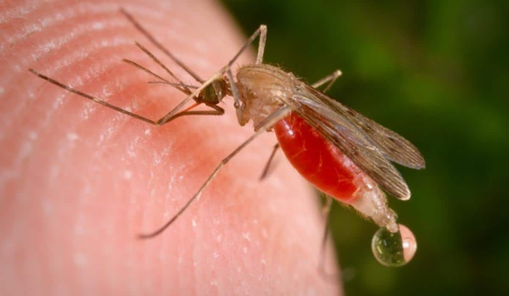

 El género Anopheles es uno de los más antiguos y representa un grupo de mosquitos que ha estado presente en la Tierra desde hace más de 100 millones de años, según registros fósiles. Pertenece a la familia Culicidae y cuenta con más de 460 especies descritas, aunque solo unas 30 son capaces de transmitir malaria de forma significativa a los humanos. Anopheles ha evolucionado en diversos hábitats y regiones, pero es especialmente prevalente en zonas tropicales y subtropicales de África, Asia y América Latina.
Los primeros registros detallados del Anopheles como vector de la malaria se remontan al siglo XIX, cuando científicos descubrieron que era el principal transmisor del parásito Plasmodium. Su evolución ha estado muy ligada al desarrollo de ambientes acuáticos adecuados para su reproducción, y muchas de sus especies han demostrado una gran adaptabilidad a los cambios en el clima y en el uso del suelo provocados por la actividad humana.
A diferencia de otros géneros como Aedes, los mosquitos Anopheles suelen ser más activos durante el anochecer y la noche. Presentan una postura característica al alimentarse, con el cuerpo en ángulo respecto a la superficie. Su capacidad de transmitir enfermedades como la malaria ha hecho que sean objeto de estudio y control desde hace décadas, y siguen siendo una de las mayores amenazas sanitarias en muchas partes del mundo.
El ciclo de vida del mosquito Anopheles incluye cuatro fases: huevo, larva, pupa y adulto, y se desarrolla completamente en el agua. Este ciclo puede completarse en un rango de 7 a 14 días, dependiendo de la temperatura y la disponibilidad de agua. La duración exacta varía entre especies y condiciones ambientales.
La hembra pone sus huevos de manera individual sobre la superficie del agua, generalmente en charcos, estanques, arrozales o zonas de agua estancada. Los huevos tienen flotadores que les permiten mantenerse a flote. Después de uno o dos días, los huevos eclosionan y emergen las larvas.
Las larvas de Anopheles flotan de forma paralela a la superficie del agua, alimentándose de microorganismos. A través de cuatro estadios larvales, crecen hasta convertirse en pupas. Durante la fase de pupa, que es no alimenticia, el mosquito experimenta una metamorfosis que culmina con la emergencia del adulto.
Los mosquitos adultos emergen de la superficie del agua y tras un breve periodo de maduración, las hembras comienzan a buscar sangre para desarrollar sus huevos. Solo las hembras pican a los humanos o animales, mientras que los machos se alimentan exclusivamente de néctar. Esta fase adulta es la responsable de la transmisión de enfermedades.
Enfermedad parasitaria causada por el protozoo Plasmodium, que es transmitido por la picadura de mosquitos Anopheles infectados. Los síntomas incluyen fiebre, escalofríos, sudoración intensa, dolor de cabeza y, en casos graves, puede causar anemia severa, coma y la muerte. Es una de las enfermedades infecciosas más mortales del mundo.
Infección causada por nematodos filariales que se transmiten a través de la picadura de mosquitos, incluido el género Anopheles. Puede provocar una enfermedad conocida como elefantiasis, que se caracteriza por inflamación extrema de las extremidades y otras partes del cuerpo.
El mosquito Anopheles produce picaduras similares a otras especies: leve hinchazón, enrojecimiento y comezón moderada. Es el principal vector de la malaria.